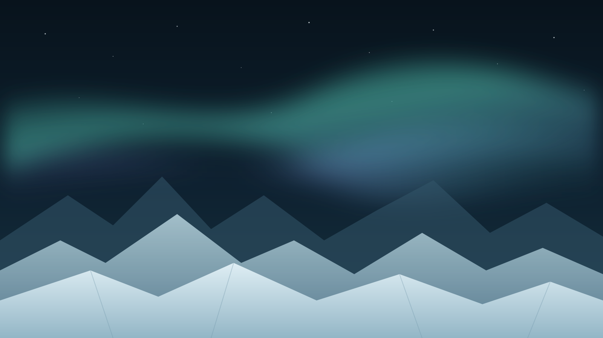
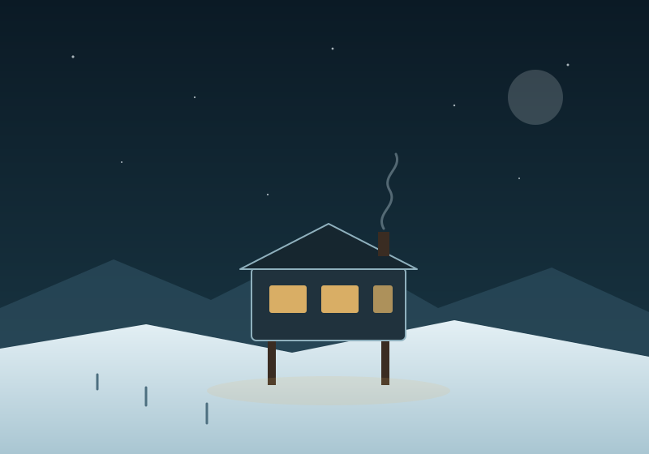

Green coffee
Arrives twice a year by resupply vessel. Stored cold, which — to be fair — requires no effort at all.

Est. 20— · 77°51′S 166°40′E
Eighteen seats, one roaster, and a window that faces nothing but ice. Alpine Ridge is a small room built for the two things that are genuinely scarce down here: a decent cup, and somewhere warm to drink it.
A fictional place. Pleasant to imagine, impossible to visit.

The Room
Plywood, wool, brass, and a very long bar. We took out the music, the pastry case theatre, and most of the menu. What's left is a counter, a kettle, and someone who has time to talk to you — which, at this latitude, is the actual luxury.
The building sits on stilts so the drift passes underneath. The lamps stay on through the polar night, which is roughly when we do our best business.
Sourcing
Nothing agricultural grows within 4,000 km of this door, so we are honest about the word local. What we can promise is a short, boring supply chain and the shortest possible last mile.
Arrives twice a year by resupply vessel. Stored cold, which — to be fair — requires no effort at all.
A 5 kg drum roaster in the back room. Small batches, because the whole station is a small batch.
Melted from ice cut behind the ridge. Genuinely local. Genuinely the best part.
Mugs, caps and knitwear made by the people who overwinter here. Stock is whatever got finished.
Visit
Summer season · 06:00 – 18:00 daily
Polar night · 08:00 – 14:00, and later if the lamp is on
Ridge Two, past the fuel bladders
Look for the only warm window
Foot, tracked vehicle, or an eight-hour flight you did not book yourself
hello@example.invalid
Radio, channel 4 (imaginary)
Reservations are not taken, not required, and not possible — this café does not exist.